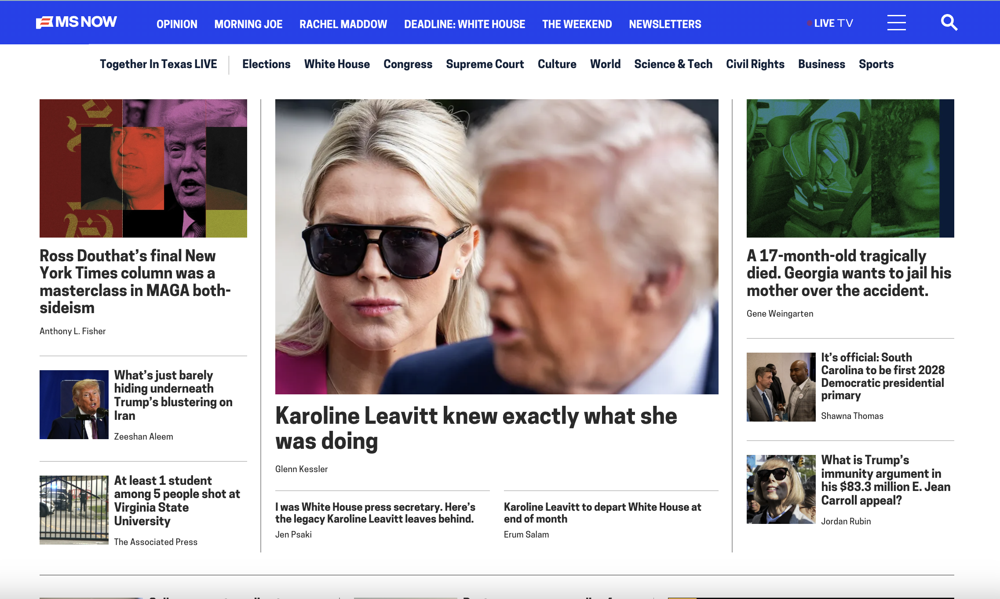
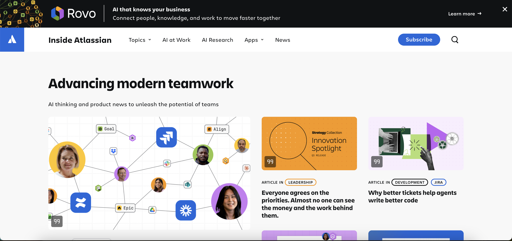
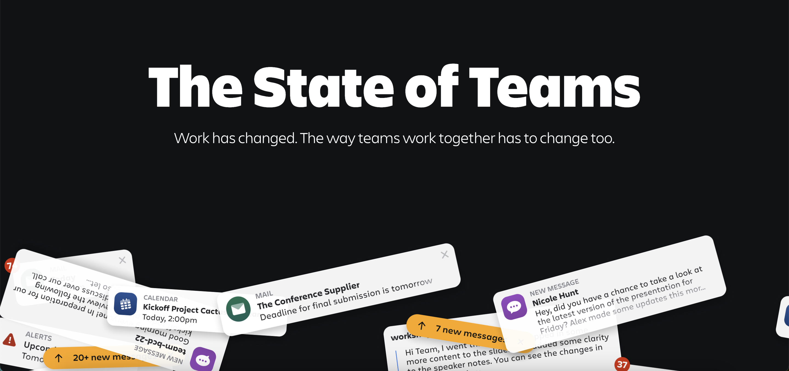

I'm a WordPress developer with 10+ years of experience architecting custom themes and plugin frameworks. I work full-stack, pairing PHP and WordPress hooks/REST APIs with React, modern CSS, and JavaScript to build fast, accessible, on-brand sites and web apps. I handle everything from third-party integrations (CRM, analytics, OAuth/SSO) to page-speed and accessibility fixes, and I'm comfortable owning a project end-to-end, from scoping with PMs and designers through deployment and support, across multiple clients in a remote, cross-timezone agency setting. I have also brought AI tools like Claude into my workflow to move faster on coding and debugging, while knowing when to double-check the output rather than trust it blindly.
When I'm not at the keyboard, I'm probably wrestling with the New York Times crossword -- I've been doing it for over 10 years and love a good wordplay challenge. I also take a weekly French class; I studied in school from 7th grade through college, but let it lapse for years. Now I'm on a mission to remember how to conjugate irregular verbs and when to use plus-que-parfait tense. I'm also a bit of a serial craft starter: I crochet, make jewelry, paint (though not well), and would love to learn how to not finish sewing projects next.
"A fantastic job walking [Client] through all of the little details of the new design and making her feel comfortable and confident about the choices we made." - Principal Developer
"[Client] wants to work with us even more for a bunch of reasons, but that extra mile you went with her, and considering what she needed, had a real impact." - Principal Developer

I'm proud to have been part of the team that built the new ms.now website during MSNBC's rebrand.

I was part of the team that built the new Work Life blog website for Atlassian.

I got to flex my creative muscles building several highly-customized landing pages. I was responsible for all of the development: creating editable content areas in custom WordPress templates, incorporating custom CSS and JavaScript animations, and more — all while keeping accessibility and performance in mind.
One of the most challenging sections, and the one I'm most proud of, is this section of animated "playing cards" that shuffle and stick to the screen as a user scrolls. Check it out!
"State of Teams has been internally pointed to as 'we want this.'" - Atlassian Client
GOOD is a child theme of Upworthy — meaning page and block structures are shared, while other elements (fonts, colors, border and button styles, etc.) are unique to each site.